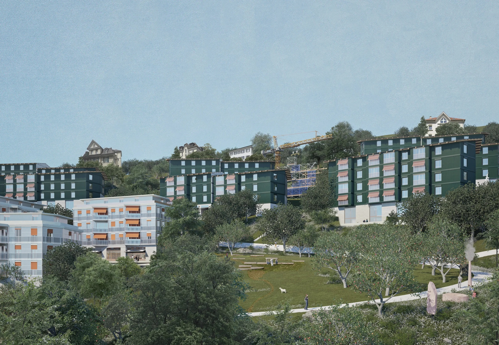
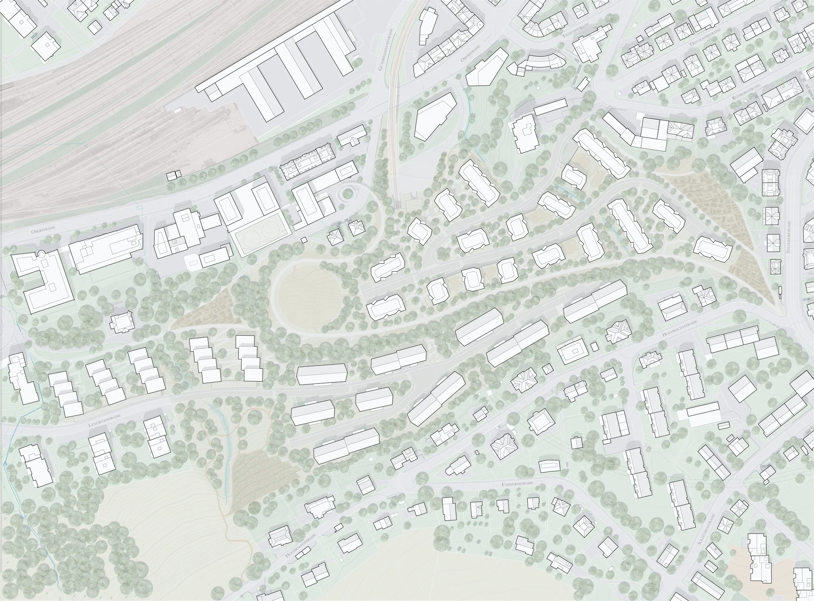
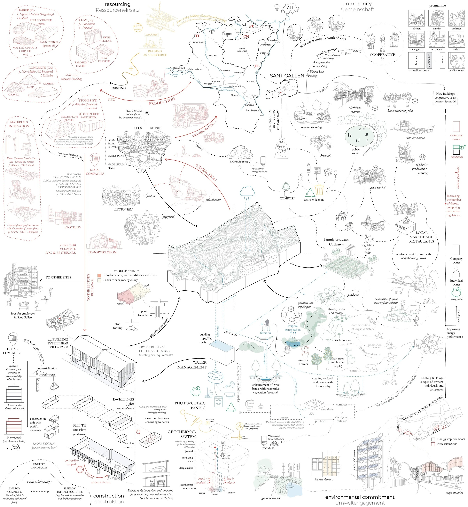
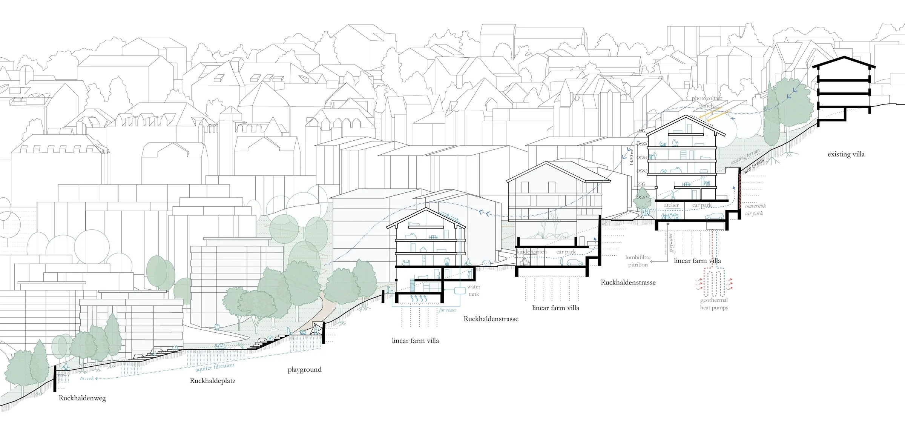
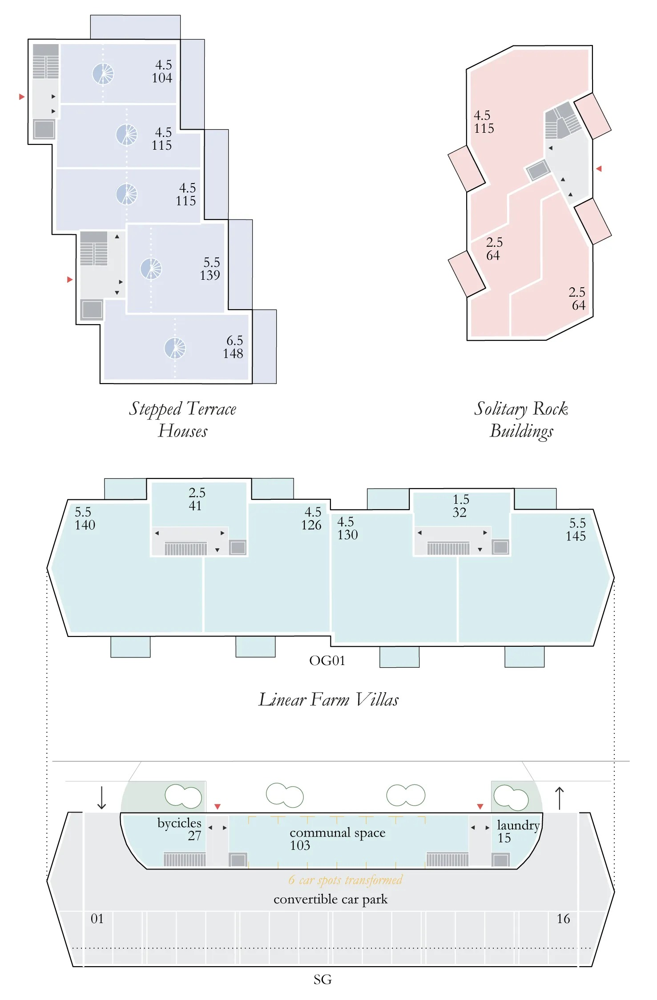
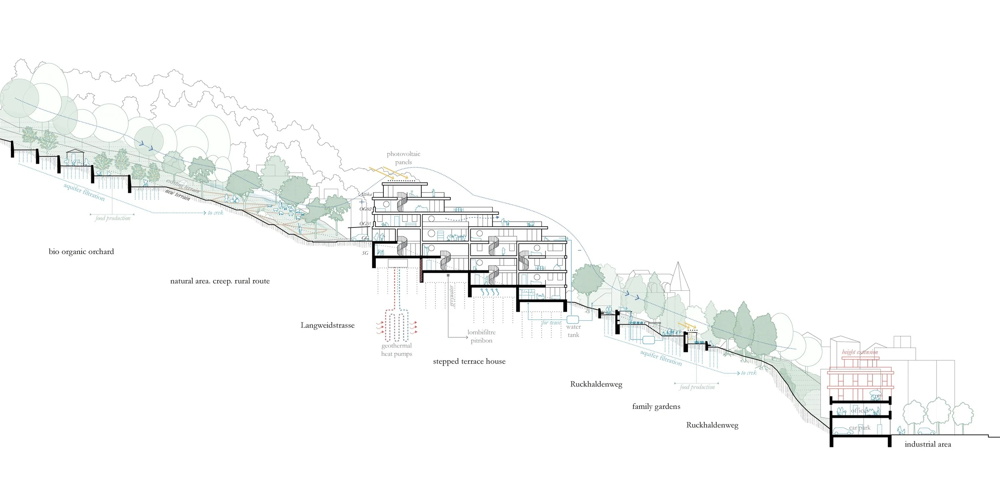
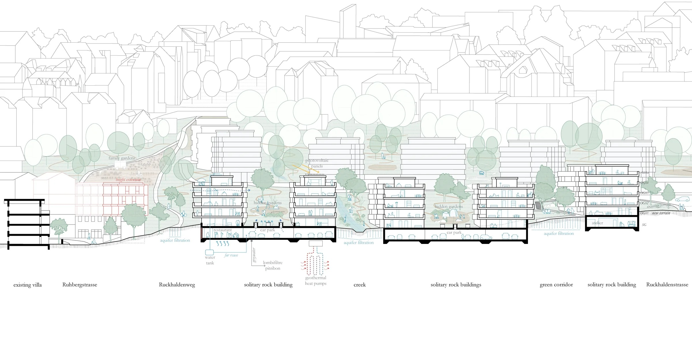

Die den Gletscher bewohnen
Europan 18 — Winner · Ruckhalde, St. Gallen (CH) · Press kit
Download press kit (.zip) Text only (.docx)Images may be published with the credit © the authors in connection with coverage of the project. For other uses, larger files or interviews, write to studio@mtgrp.xyz.
In short
Die den Gletscher bewohnen (“Those who inhabit the glacier”) is the winning entry for the Ruckhalde site in St. Gallen, Switzerland, in the 18th session of Europan, whose theme was Re-Sourcing. The 12.4-hectare slope sits exactly where the molasse bedrock meets the moraine left by the last ice age. The project reads that geological threshold as the brief: geology decides where to build, retain and drain, and the glacier becomes a slow partner in design rather than a backdrop.
A massive, productive plinth, modelled on the region’s farmhouses and alpine stables, carries light dwellings. Its ground floor is a car park built to be converted later into a market, atelier, daycare or event space. The former cog railway, which made the “Ruckhalde curve” famous, becomes a shared path for walkers and cyclists. The moraine, creeks and existing trees are kept, existing buildings are extended rather than demolished, and the materials come from producers within reach: timber, clay, sandstone, recycled insulation and glass.
Project description (text by the authors)
Geology: the hidden history of St. Gallen
The present-day urban area of St. Gallen was shaped by a long glacial process. Glaciers sculpted the high valley and left traces that still shape the city and the way it is built. A prominent moraine ridge between Kreuzbleiche and Ruckhalde marks the former edge of the glacier tongues. These structures decide where building, reinforcement or drainage is possible: geology sets the framework for architecture.
A geological cross-section reveals the sequence of layers, from the crystalline depths of the Black Forest, through the molasse deposits, to the moraine cover of the last ice age. Our site lies precisely at the threshold between molasse and moraine. Architecture reacts here to shifting ground, forgotten watercourses and sedimented time. The glaciers are gone, but they are still building with us.
Is this urban or rural? Maybe both
If the geology beneath St. Gallen speaks of deep, slow time, the architecture above must respond with openness and adaptability. Building today is no longer about fixed forms or single functions. It is about a layered, flexible structure, a spatial and material infrastructure that can adjust to social, ecological or economic change. Some parts may remain raw or unfinished, inviting temporary use, collective appropriation or later completion.
The building is more than architecture. It is part of a social and metabolic process in which people, materials and actions interact continuously. Is this still city? Already landscape? The project resists a clear answer. Planning here is not about drawing limits but about opening conditions: for shifting populations, changing resource flows, and new ways of living and working. The future is not a form to be filled but a field to be cultivated, layer by layer.
Learning from the local: the plinth as infrastructure
The massive plinth draws on local agricultural references, the farm and the alpine stable, and becomes the base of a varied infrastructure. Shared and public uses sit at plinth level: parking, laundries, studios and communal rooms that encourage exchange. The upper floors hold the dwellings, giving privacy and retreat.
Main concept
The urban strategy follows the topography and weaves existing green spaces and waterways into an open, permeable structure. Green areas run downhill between the new volumes, parallel to the creeks. The project answers the fine grain of its surroundings with terraced houses, villa-like blocks and freestanding buildings. The former cog-railway track is reactivated as a public path for pedestrians and cyclists, linking the neighbourhoods around it.
Types and phases
- Phase A: stepped terrace houses follow the terrain and continue the typology of the western neighbourhood, with green roof terraces.
- Phase B: linear farm villas on the mid-slope take up the scale of the villas above and define the spaces between them.
- Phase C: solitary, rock-like volumes along the moraine ridge, shaped by the terrain and echoing its geology in their materials.
- Phases D and E: urban acupuncture. The existing fabric is densified through rooftop additions, courtyard adaptations, conversions and façade upgrades, without overwhelming the neighbourhood.
The car park as a transformable space
The ground floor is parking today, with shared mobility alongside, but simple structural measures allow it to become a market, a play area, studios, a daycare or a small shop tomorrow. Vehicle access is from Langweid and Treuacker streets, so the green paths stay safe for walking and cycling.
Paths, gardens, water
The new path network follows the former railway line and stays barrier-free; a footbridge connects the rail loop to Oberstrasse. Family gardens sit at the edges, an organic orchard occupies the groundwater-sensitive area, and the large square at the rail loop becomes the centre of the neighbourhood. Green corridors tie the site to the surrounding landscape, while retention basins and wetlands recharge groundwater and temper the microclimate.
Building types
Type A, stepped terrace houses with maisonettes arranged like townhouses. Type B, linear blocks with compact student studios and larger live-work apartments. Type C, freestanding buildings mixing small units for single people with larger apartments for different stages of life. Every unit has private outdoor space and more than one orientation; a cooperative organisation supports shared living and careful use.
Materials within reach
Circular economy and local materials, but no dogma: you use what you have. Loam, sand, gravel, sandstone and Nagelfluh excavated on site return as rammed earth, clay plaster and stone; timber, insulation made from recycled newspaper and low-carbon float glass come from producers in the canton. Local companies build with prefabricated elements and second-hand components.
How will we live in community?
Living in community means making spaces that adapt to people and their environment. Here architecture does not impose; it responds to the terrain, to water and to social change. The plinth becomes a shared foundation for collective life, with services, productive spaces and room for exchange. More than a group of buildings, the project is a living infrastructure designed to evolve, adapt and sustain a resilient community over time.
Fact sheet
| Project | Die den Gletscher bewohnen |
| Competition | Europan 18, Re-Sourcing |
| Site | Ruckhalde: Sustainable Habitat, St. Gallen, Switzerland |
| Result | Winner (1st prize) |
| Year | 2025 |
| Site area | 12.4 ha |
| Elevation | 684 m |
| Programme | Housing, productive and communal ground floors, convertible car park, public paths, gardens and orchard |
| Client / site owner | City of St. Gallen |
| Organiser | Europan Switzerland |
Credits
- Authors: Jorge Sanchez Bajo (ES), Andrew Georges (LB), Bettina Kagelmacher (DE), Roman Schober (CH)
- Office: MTGRP — Metagroupe (Beirut, Madrid, Milan)
- Collaborators: tebt+
- Images: © the authors
Contact
MTGRP — studio@mtgrp.xyz — www.mtgrp.xyz — Instagram @metagroupe
Images






